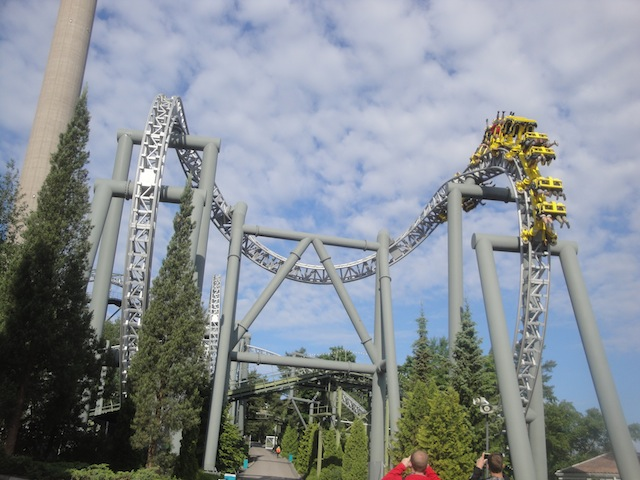
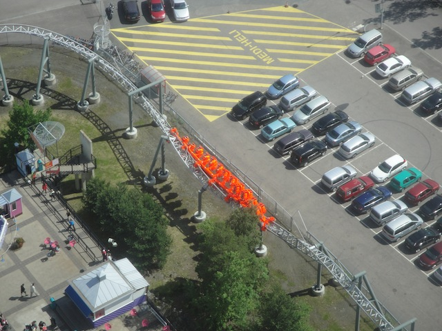
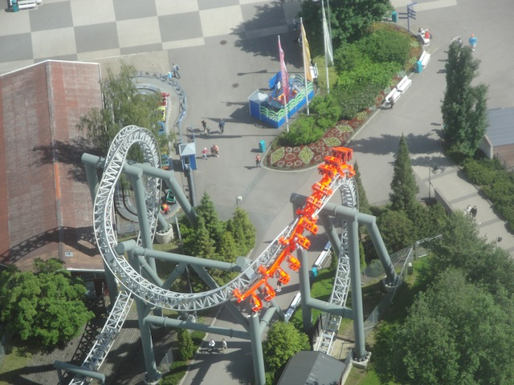
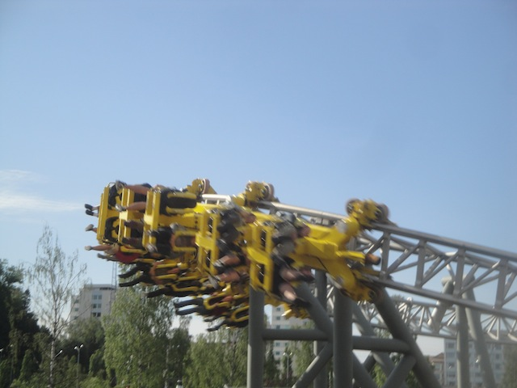
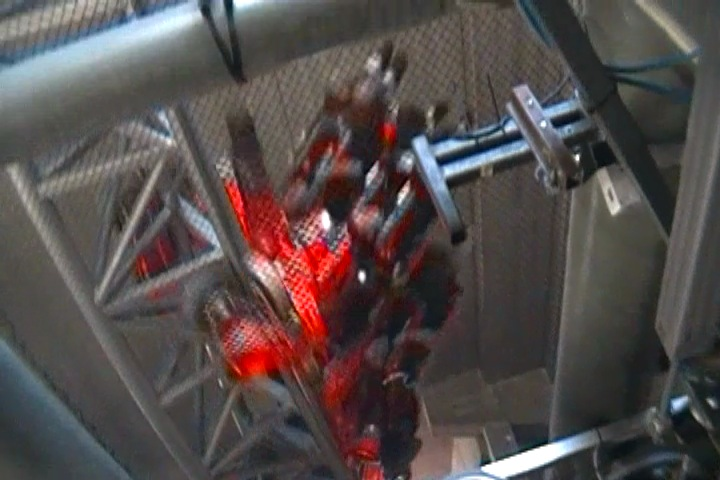

| |
Tornado Review

We're here at Särkänniemi. Today, we'll be reviewing Tornado, the park's Inverted Coaster. And no. This isn't a B&M Invert, or even a custom SLC. No, this is something FAR more rare. This is actually one of the few Intamin Inverts ever built. There's only 2 of these things in the world. And this is one of those two. And I have to say. This is a...really interesting ride. But in a good way. It definetly has a unique vibe to it. You can tell that Intamin makes their Inverts differently than B&M, and it shows in Tornado. How? Well, let's ride and see. Get in the cars, pull down the OTSRs, and away we go. We roll out of the station, around a turn, and climb up the lift. You don't get much of a view as the track and the catwalk under you takes up a lot of the view, but you can still see the tallest structure in Finland, trees, and the lake behind the park. Eventually, we reach the top, roll through some straight track, roll around a turn, and go down the first drop. It has a little bit of a curve to it, but it's actually pretty straight and just goes straight on down. You don't get that on many Inverted coasters. It's kind of nice. And hey, you get some good speed going down. This is going to be fun. We then head into the vertical loop. It's nothing really special. Just your typical old vertical loop. But I will admit that the loop on Tornado is actually pretty forceful. You really get some Gs on it. Not the most forceful Invert, but definetly more forceful than the more recent B&M Inverts. We then see some concrete, and TAKE THE TUNNEL!!! Get used to saying that on this ride. We go through some straight track, blast out of the tunnel, and are now flipping upsidedown. Specifically, we're now in a Cobra Roll. Upsidedown, twist out, corkscrew back upsidedown, and dive to the ground. Now this is a good time to admit one of the flaws of Tornado. It's not a butter smooth ride. You know the Intamin rattle? That thing where many Intamin coasters have this sort of shuffle? Well, sadly, it's on Tornado. I don't want to complain as it's not a big deal. Yeah, there's tiny smack in the cobra roll. But it doesn't hurt. I don't want to hear people whining that Tornado is rough. It doesn't hurt. And hey. The cobra roll is fun. You could even say that that roughness is just some whip and a nice little smack. Kind of like the final turn on Raptor. But let's move on. There's more to cover with this ride. We actually head up through this curve, threading the loop. Very cool. You don't often see coasters threading the loop anymore. I'll admit the effect doesn't work quite as well on Inverted coasters, as demonstrated repeatedly, but it's still fun. Sadly, we've lost some speed in that, so we're not going quite as fast. But hey. There's this mild, not very steep, drop right into a tunnel. Wee! TAKE THE...HOLY SH*T!!! WHY ARE WE UPSIDEDOWN!!? Ok. We're back outside again! What the f*ck!? You see, inside that tunnel, there's an inline twist. And because the entire inside of it is all just pure concrete, you can't really tell which way is up and down. The floor and ceiling look identical, as do the walls. All just concrete. So it's this really weird flipping. Yeah, you can obviously tell when you're upsidedown, but the indoor element makes it more disorienting. Plus, we gain more speed from that, just tumbling in and out. I really wish more rides had inline twist tunnels. They really help out the ride. We then head up into an upward helix. We lose some speed, but gain some positive Gs. I'm liking this so far. We then head into another inline twist. This one isn't nearly as cool as we're outside for this one. It's also slower than the indoor inline twist. You'd think this would make it inferior, and yeah. It does. But it has its own charm. It's really slow nature actually gives it some good hangtime. I really like that. Hangtime is underrated. We then head around another curved turn, heading down closer to the ground. Actually, we're heading for a building. TAKE THE TUNNEL!!! And slow down for the brake run. So that's Tornado. It's certainly an intersting ride. It's not the best Inverted coaster ever. I can think of many others that are far more forceful. But honestly, it's a really fun ride and actually pretty unique for an Inverted coaster. The inversions are fun, you don't often see hangtime on an invert, and it's just an all out intersting coaster. Definetly worth a couple rides when visiting Särkänniemi.
8/10
Location: Särkänniemi
Opened: 2001
Built by: Intamin
Last Ridden: June 27, 2014
Tornado Photos









Home
|